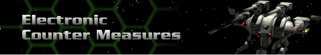

All ECM Devices are gradually available to all Hercs. The effects of multiple ECM systems are cumulative.
Single Band ECM –Reduces opponent’s chance to hit by 5% of their base to-hit chance.
Zerosignal Dampener – Reduces an opponent’s chance to hit by 10% of their base to-hit chance.
Variable Pulse Ghoster –Reduces an opponent’s chance to hit by 15% of their base to-hit chance.
Electronic Image Displacer –Reduces an opponent’s chance to hit 20% of their base to-hit chance.
Active Offsource Jamming –Reduces an opponent’s chance to hit by 25% of their base to-hit chance.